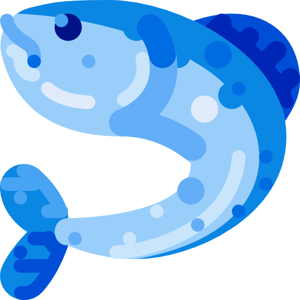
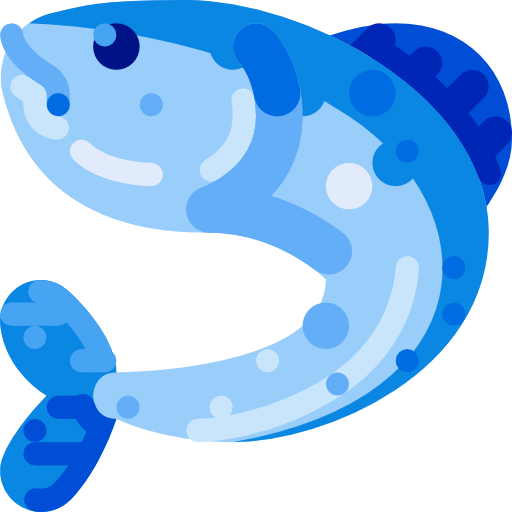

Sanji's all blue restaurant
This is the restaurant created by Sanji's after descovering All blue when touring the worl with the greatest pirate of all times : Monkey D. Luffy. It is composed of the most incredible ingredients to bring the most awesome dishes you will ever dream about.
A culinary adventure
Discover the wonders of all blue
Master Chief Sanji
Trained in the well known Barati restaurant, bringing you the finest culinary creations

Rare ingredients
Featuring the most exotic ingredients which weren't even used on Big mom's reverie
A unique experience
Every dishes tells a story like Usopp could never
Master Chief Sanji
Trained in the well known Barati restaurant, bringing you the finest culinary creations

Rare ingredients
Featuring the most exotic ingredients which weren't even used on Big mom's reverie
A unique experience
Every dishes tells a story like Usopp could never